Regular Expressions
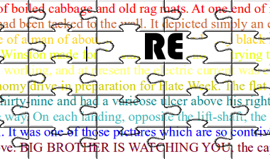
The aim of this chapter of our Python tutorial is to present a detailled and descriptive
introduction into regular expressions. This introduction will explain the theoretical aspects
of regular expressions and will show you how to use them in Python scripts.
The term "regular expression", sometimes also called regex or regexp, is originated in
theoretical computer science. In theoretical computer science they are used to define a language
family with certain characteristics, the so-called regular languages. A finite state machine (FSM),
which accept language defined by a regular expression,
exists for every regular expression. You can find an implementation of a
(Finite State Machine in Python) on our website.
Regular Expressions are used in programming languages to filter texts or textstrings. It's possible
to check, if a text or a string matches a regular expression. A great thing about regular expressions:
The syntax of regular expressions is the same for all programming and script languages, e.g. Python, Perl,
Java, SED, AWK and even X#.
The first programs which had incorporated the capability to use regular expressions were the Unix
tools ed (editor), the stream editor sed and the filter grep.
There is another mechanism in operating systems, which shouldn't be mistaken for regular expressions.
Wildcards, also known as globbing, look very similiar in their syntax to regular expressions. But the
semantics differs considerably. Globbing is known from many command line shells, like the Bourne shell,
the Bash shell or even DOS. In Bash e.g. the command "ls *.txt" lists all files (or even directories)
ending with the suffix .txt; in regular expression notation "*.txt" wouldn't make sense, it would
have to be written as ".*.txt"
Introduction
When we introduced the sequential data types, we got to know the "in" operator. We check in the following example, if the string "easily" is a substring of the string "Regular expressions easily explained!":>>> s = "Regular expressions easily explained!" >>> "easily" in s True >>>We show step by step with the following diagrams how this matching is performed:
We check if the string sub = "abc"
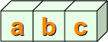
is contained in the string s = "xaababcbcd"
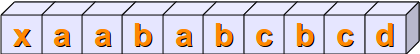
By the way, the string sub = "abc" can be seen as a regular expression, just a very simple one.
In the first place, we check, if the first positions of the two string match, i.e. s[0] == sub[0].
This is not satisfied in our example. We mark this fact by the colour red:
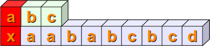
Then we check, if s[1:4] == sub. This means that we have to check at first, if sub[0] is equal to s[1]. This is true and we mark it with the colour green. Then we have to compare the next positions. s[2] is not equal to sub[1], so we don't have to proceed further with the next position of sub and s:
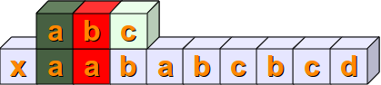
Now we have to check if s[2:5] and sub are equal. The first two positions are equal but not the third:
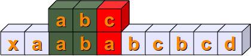
The following steps should be clear without any explanations:
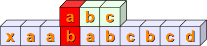
Finally, we have a complete match with s[4:7] == sub :
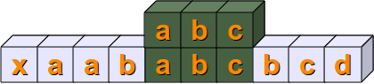
A Simple Regular Expression
We already said in the previous section, that we can see the variable "sub" from the introduction as a very simple regular expression.If you want to use regular expressions in Python, you have to import the re module, which provides methods and functions to deal with regular expressions.
Representing Regular Expressions in Python
From other languages you might be used to represent regular expressions within Slashes "/", e.g. that's the way Perl, SED or AWK deals with them. In Python there is no special notation. Regular expressions are represented as normal strings.But this convenience brings along a small problem: The backslash is a special character used in regular expressions, but is also used as an escape character in strings. This implies, that Python would first evaluate every backslash of a string and after this - without the necessary backslashes - it would be used as a regular expression. One way to prevent this consists in writing every backslash as "\\" and this way keep it for the evaluation of the regular expression. This can give rise to extremely clumsy expressions. E.g. a backslash in a regular expression has to be written as a double backslash, because the backslash functions as an escape character in regular expressions. Therefore it has to be quoted. The same is true for Python strings. The backslah has to be quoted by a backslash. So, a regular expression to match the Windows path "C:\programs" corresponds to a string in regular expression natation with four backslashes, i.e. "C:\\\\programs".
The best way to overcome this problem consists in marking regular expressions as raw strings. The soluation to our Windows path example looks like as a raw string:
r"C:\\programs"
Let's look at another example, which might be quite disturbing for people used to wildcards:
r"^a.*\.html$"
The regular example of our previous example matches all file names (strings) which start with an "a" and and with ".html". We will explain in the further sections the structure of the example above in detail.
Syntax of Regular Expressions
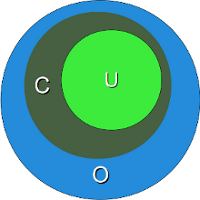r"cat" is a regular expression, though a very simple one without any metacharacters.
Our RE r"cat" matches for example the following string:
"A cat and a rat can't be friends."
Interestingly, the previous example shows already a "favorite" example for a mistake, frequently made not only by beginners and novices but also by advanced users of regular expressions. The idea of this example is to match strings containing the word "cat". We are successful with this, but unfortunately we are matching a lot of other words as well. If we match "cats" in a string, that might be still okay, but what about all those words containing ths character sequence "cat"? We match words like "education", "communicate", "falsification", "ramifications", "cattle" and many more. This is a case of "over matching", i.e. we receive positive results, which are wrong according to the problem we want to solve.
We have illustrated this problem in the diagram on the right side. The dark green Circle C corresponds to the set of "objects" we want to recognize. But instead we match all the elements of the set O (blue circle). C is a subset of O.
The set U (lightgreen circle) in this diagram is a subset og C. U is a case of "under matching", i.e. if the regular expression is not matching all the intended strings. If we try to fix the previous RE, so that is don't create over matching, we might try the expression
r" cat ".
These blanks prevent the matching of the above mentioned words like "education", "falsification"
and "rammification", but we fall prey to another mistake. What about the string "The cat, called
Oscar, climbed on the roof."? The problem is, that we don't expect a comma but only a blank behind
the word "cat".
Before we go on with the description of the syntax of regular expressions, we want to explain how to use them in Python:
>>> import re
>>> x = re.search("cat","A cat and a rat can't be friends.")
>>> print(x)
<_sre.SRE_Match object at 0x7fd4bf238238>
>>> x = re.search("cow","A cat and a rat can't be friends.")
>>> print(x)
None
In the previous example we had to import the module re to be able to work with regular expressions.
Then we used the methode search from the re module. This is most probably the most important and the
most often used methode of this module.
re.search(expr,s) checks a string s for an occurrence of a substring which matches the regular expression
expr. The first substring (from left), which satisfies this condition will be returned. If a match has
been possible, we get a so-called match object as a result, otherwise the value None.
This methode is already enough to use regular expressions in Python programs:
>>> if re.search("cat","A cat and a rat can't be friends."):
... print("Some kind of cat has been found :-)")
... else:
... print("Some kind of cat has been found :-)")
...
Some kind of cat has been found :-)
>>> if re.search("cow","A cat and a rat can't be friends."):
... print("Cats and Rats and a cow.")
... else:
... print("No cow around.")
...
No cow around.
Any Character
Let's assume, that we havent' been interested in the previous example to recognize the word cat, but all three letter words, which end with "at".The syntax of regular expressions supplies a metacharacter ".", which is used like a placeholder for "any character". The regular expression of our example can be written like this:
r" .at "
This RE matches three letter words, isolated by blanks, which end in "at". Now we get words like "rat", "cat", "bat", "eat", "sat" and many others.
But what, if the text contains "words" like "@at" or "3at"? These words match as well and this means that we have created over matching again. We will learn a solution in the following section:
Character Classes
Square brackets, "[" and "]", are used to include a character class.[xyz] means e.g. either an "x",
an "y" or a "z".
Let's look at a more practical example:
r"M[ae][iy]er"This is a regular expression, which matches a surname which is quite common in German. A name with the same pronunciation and four different spellings: Maier, Mayer, Meier, Meyer
A finite state automata to recognize this expression can be build like this:
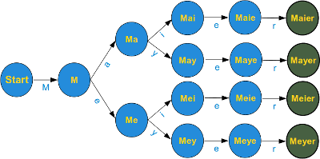
The graph of the finite state machine (FSM) is simplified to keep the design easy. There should be an arrow in the start node pointing back on its own, i.e. if a character other than an upper case "M" has been processed, the machine should stay in the start condition. Furthermore, there should be an arrow pointing back from all nodes except the final nodes (the green ones) to the start node, if not the expected letter has been processed. E.g. if the machine is in state Ma, after having processed an "M" and an "a", the machine has to go back to state "Start", if any character except "i" or "y" can be read. Those who have problems with this FSM, shouldn't be bothered, because it is not necessary to understand it for the things to come.
Instead of a choice between two characters, we often need a choice between larger character classes. We might need e.g. a class of letters between "a" and "e" or between "0" and "5"
To manage such such character classes the syntax of regular expressions supplies a metacharacter "-".
[a-e] a simplified writing for [abcde] or [0-5] denotes
[012345].
The advantage is obvious and even more impressive, if we have to coint expressions like "any uppercase letter" into regular expressions. So instead of
[ABCDEFGHIJKLMNOPQRSTUVWXYZ] we can write [A-Z].
If this is not convincing: Write an expression for the character class "any lower case or uppercase letter"
[A-Za-z]There is something more about the dash, we used to mark the begin and the end of a character class. The dash has only a special meaning if it is used within square brackets and in this case only if it isn't positioned directly after an opening or immediately in front of a closing bracket.
So the expression
[-az is only the choice between the three characters "-", "a" and "z", but no other
characters. The same is true for [az-.
Exercise:
What character class is described by
[-a-z]?
Answer The character "-" and all the characters "a", "b", "c" all the way up to "z".
The only other special character inside square brackets (character class choice) is the caret "^". If it is used directly after an opening sqare bracket, it negates the choice.
[^0-9] denotes the choice "any character
but a digit". The position of the caret within the square brackets is crucial. If it is not positioned as the first
character following the opening square bracket, it has no special meaing.
[^abc] means anything but an "a", "b" or "c"
[a^bc] means an "a", "b", "c" or a "^"
A Practical Exercise in Python
Before we go on with our introduction into regular expressions, we want to insert a practical exercise with Python.We have a phone list of the Simpsons, yes, the famous Simpsons from the American animated TV series. There are some people with the surname Neu. We are looking for a Neu, but we don't know the first name, we just know that it starts with a J. Let's write a Python script, which finds all the lines of the phone book, which contain a person with the described surname and a first name starting with J. If you don't know how to read and work with files, you should work through our chapter File Management. So here is our example script:
import re
fh = open("simpsons_phone_book.txt")
for line in fh:
if re.search(r"J.*Neu",line):
print(line.rstrip())
fh.close()
Predefined Character Classes
You might have realized, that it can be quite cumbersome to construe certain character classes. A good example is the character class, which describes a valid word character. These are all lower case and uppercase characters plut all the digits and the underscore, corresponding to the following regular expression:r"[a-zA-Z0-9_]"
The special sequences consist of "\\" and a character from the following list:
| \d | Matches any decimal digit; equivalent to the set [0-9]. |
| \D | The complement of \d. It matches any non-digit character; equivalent to the set [^0-9]. |
| \s | Matches any whitespace character; equivalent to [ \t\n\r\f\v]. |
| \S | The complement of \s. It matches any non-whitespace character; equiv. to [^ \t\n\r\f\v]. |
| \w | Matches any alphanumeric character; equivalent to [a-zA-Z0-9_]. With LOCALE, it will match the set [a-zA-Z0-9_] plus characters defined as letters for the current locale. |
| \W | Matches the complement of \w. |
| \b | Matches the empty string, but only at the start or end of a word. |
| \B | Matches the empty string, but not at the start or end of a word. |
| \\ | Matches a literal backslash. |
Word boundaries
The \b and \B of the previous overview of special sequences, is often not properly understood or even misunderstood especially by novices. While the other sequences match characters, - e.g. \w matches characters like "a", "b", "m", "3" and so on, - \b and \B don't match a character. They match empty strings depending on their neighbourhood, i.e. what kind of a character the predecessor and the successor is. So \b matches any empty string between a \W and a \w character and also between a \w and a \W character. \B is the complement, i.e empty strings between \W and \W or empty strings between \w and \w. We illustrate this in the following example: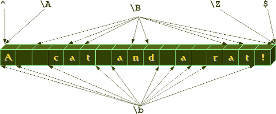
We will get to know further "virtual" matching character, i.e. the caret (^), which is used to mark the beginning of a string, and the dollar sign ($), which is used to mark the end of a string, respectively. \A and \Z, which can also be found in our previous diagram, are very seldom used alternatives to the caret and the dollar sign.
Matching Beginning and End
As we have carried out previously in this introduction, the expressionr"M[ae][iy]er" is capable of
matching various spellings of the name Mayer and the name can be anywhere in the string:
>>> import re
>>> line = "He is a German called Mayer."
>>> if re.search(r"M[ae][iy]er",line): print("I found one!")
...
I found one!
>>>
But what, if we want to match a regular expression at the beginning of a string and only at the beginning?
The re module of Python provides two functions to match regular expressions. We have met already one of them, i.e. search(). The other has in our opinion a misleading name: match()
Misleading, because match(re_str, s) checks for a match of re_str merely at the beginning of the string.
But anyway, match() is the solution to our question, as we can see in the following example:
>>> import re >>> s1 = "Mayer is a very common Name" >>> s2 = "He is called Meyer but he isn't German." >>> print(re.search(r"M[ae][iy]er", s1)) <_sre.SRE_Match object at 0x7fc59c5f26b0> >>> print(re.search(r"M[ae][iy]er", s2)) <_sre.SRE_Match object at 0x7fc59c5f26b0> >>> print(re.match(r"M[ae][iy]er", s1)) <_sre.SRE_Match object at 0x7fc59c5f26b0> >>> print(re.match(r"M[ae][iy]er", s2)) None >>>So, this is a way to match the start of a string, but it's a Python specific method, i.e. it can't be used in other languages like Perl, AWK and so on. There is a general solution which is a standard for regular expressions:
The caret '^' Matches the start of the string, and in MULTILINE (will be explained further down) mode also matches immediately after each newline, which the Python method match() doesn't do.
The caret has to be the first character of a regular expression:
>>> import re >>> s1 = "Mayer is a very common Name" >>> s2 = "He is called Meyer but he isn't German." >>> print(re.search(r"^M[ae][iy]er", s1)) <_sre.SRE_Match object at 0x7fc59c5f26b0> >>> print(re.search(r"^M[ae][iy]er", s2)) NoneBut what happens if we concatenate the two strings s1 and s2 in the following way:
s = s2 + "\n" + s1Now the string doesn't start with a Maier of any kind, but the name is following a newline character:
>>> s = s2 + "\n" + s1 >>> print(re.search(r"^M[ae][iy]er", s)) None >>>The name hasn't been found, because only the beginning of the string is checked. It changes, if we use the multiline mode, which can be activated by adding the following third parameters to search:
>>> print(re.search(r"^M[ae][iy]er", s, re.MULTILINE)) <_sre.SRE_Match object at 0x7fc59c5f26b0> >>> print(re.search(r"^M[ae][iy]er", s, re.M)) <_sre.SRE_Match object at 0x7fc59c5f26b0> >>> print(re.match(r"^M[ae][iy]er", s, re.M)) None >>>The previous example also shows, that the multiline mode doesn't affect the match method. match() never checks anything but the beginning of the string for a match.
We have learnt how to match the beginning of a string. What about the end? Of course, that's possible to. The dollar sign "$" is used as a metacharacter for this purpose. '$' matches the end of a string or just before the newline at the end of the string. If in MULTILINE mode, it also matches before a newline. We demonstrate the usage of the "$" character in the following example:
>>> print(re.search(r"Python\.$","I like Python.")) <_sre.SRE_Match object at 0x7fc59c5f26b0> >>> print(re.search(r"Python\.$","I like Python and Perl.")) None >>> print(re.search(r"Python\.$","I like Python.\nSome prefer Java or Perl.")) None >>> print(re.search(r"Python\.$","I like Python.\nSome prefer Java or Perl.", re.M)) <_sre.SRE_Match object at 0x7fc59c5f26b0> >>>
Optional Items
If you thought that our collection of Mayer names was complete, you were wrong. There are other ones all over the world, e.g. London and Paris, who dropped their "e". So we have four more names ["Mayr", "Meyr", "Meir", "Mair"] plus our old set ["Mayr", "Meyr", "Meir", "Mair"].If we try to figure out a fitting regular expression, we realize, that we miss something. A way to tell the computer "this "e" may or may not occur". A question mark is used as a notation for this. A question mark declares that the preceding character or expression is optional.
The final Mayer-Recognizer looks now like this:
r"M[ae][iy]e?r"A subexpression is grouped by round brackets and a question mark following such a group means, that this group may or may not exist. With the following expression we can match dates like "Feb 2011" or February 2011":
r"Feb(ruary)? 2011"
Quantifiers
If you just use, what we have introduced so far, you will still need a lot of things, above all some way of repeating characters or regular expressions. For this purpose, quantifiers are used. We have encountered one in the previous paragraph, i.e. the question mark.A quantifier after a token, which can be a single character or group in brackets, specifies how often that preceding element is allowed to occur. The most common quantifiers are
- the question mark ?
- the asterisk or star character *, which is derived from the Kleene star
- and the plus sign +, derived from the Kleene cross
We have already used previously one of these quantifiers without explaining it, i.e. the asterisk. A star following a character or a subexpression group means, that this expression or character may be repeated arbitrarily, even zero times.
r"[0-9].*"The above expression matches any sequence of digits, even the empty string.
r".*" matches any
sequence of characters and the empty string.
Exercise:
Write a regular expression which matches strings which starts with a sequence of digits - at least one digit - followed by a blank and after this arbitrary characters.
Solution:
r"[0-9][0-9] .*"
So, you used the plus character "+". That's fine, but in this case you have either cheated by going ahead in the text or you know already more about regular expressions than we have covered in our course :-)
Now that we mentioned it: The plus operator is very convenient to solve the previous exercise. The plus operator is very similiar to the star operator, except that the character or subexpression followed by a "+" sign has to be repeated at least one time. Here follows the solution to our exercise with the plus quantifier:
Solution with the plus quantifier:
r"[0-9]+ .*"If you work for a while with this arsenal of operators, you will miss inevitably at some point the possibility to repeat expressions for an exact number of times. Let's assume you want to recognize the last lines of addresses on envelopes in Switzerland. These lines usually contain a four digits long post code followed by a blank and a city name. Using + or * are too unspecific for our purpose and the following expression seems to be too clumsy:
r"^[0-9][0-9][0-9][0-9] [A-Za-z]+"Fortunately, there is an alternative available:
r"^[0-9]{4} [A-Za-z]*"
Now we want to improve our regular expression. Let's assume that there is no city name in Switzerland, which consists
of less than 3 letters, at least 3 letters. We can denote this by [A-Za-z]{3,}. Now we have to recognize lines with
German post code (5 digits) lines as well, i.e. the post code can now consist of either four or five digits:
r"^[0-9]{4,5} [A-Z][a-z]{2,}"
The general syntax is {from, to}: this means that the expression has to appear at least "from" times and not more
than "to" times. {, to} is an abbreviated spelling for {0,to} and {from,} is an abbreviation for "at least from times
but no upper limit"
Grouping
We can group a part of a regular expression by surrounding it with parenthesis (round brackets). This way we can apply operators to the complete group instead of a single character.Capturing Groups and Backreferences
Parenthesis (round brackets, braces) not only group subexpressions but they create backreferences as well. The part of the string matched by the grouped part of the regular expression, i.e. the subexpression in parenthesis, is stored in a backreference. With the aid of backreferences we can reuse parts of regular expressions. These stored values can be both reused inside the expression itself and afterwards, when the regexpr will have been executed. Before we continue with our treatise about backreferences, we want to strew in a paragraph about match objects, which is important for our next examples with backreferences.A Closer Look at the Match Objects
So far we have just checked, if an expression matched or not. We used the fact the re.search() returns a match object if it matches and None otherwise. We haven't been interested e.g. in what has been matched. The match object contains a lot of data about what has been matched, positions and so on.A match object contains the methods group(), span(), start() and end(), as can be seen in the following application:
>>> import re
>>> mo = re.search("[0-9]+", "Customer number: 232454, Date: February 12, 2011")
>>> mo.group()
'232454'
>>> mo.span()
(17, 23)
>>> mo.start()
17
>>> mo.end()
23
>>> mo.span()[0]
17
>>> mo.span()[1]
23
>>>
These methods are not difficult to understand.
span() returns a tuple with the start and end position, i.e. the string index where the regular expression
started matching in the string and ended matching. The methods start() and end() are in a way superfluous
as the informtion is contained in span(), i.e. span()[0] is equal to start() and span()[1] is equal to end().
group(), if called without argument, returns the substring,
which had been matched by the complete regular expression. With the help of group() we are also capable of
accessing the matched substring by grouping parentheses, to get the matched substring of the n-th group, we call
group() with the argument n: group(n).We can also call group with more than integer argument, e.g. group(n,m). group(n,m) - provided there exists a subgoup n and m - returns a tuple with the matched substrings. group(n,m) is equal to (group(n), group(m)):
>>> import re
>>> mo = re.search("([0-9]+).*: (.*)", "Customer number: 232454, Date: February 12, 2011")
>>> mo.group()
'232454, Date: February 12, 2011'
>>> mo.group(1)
'232454'
>>> mo.group(2)
'February 12, 2011'
>>> mo.group(1,2)
('232454', 'February 12, 2011')
>>>
A very intuitive example are XML or HTML tags. E.g. let's assume we have a file (called "tags.txt")
with content like this:
<composer>Wolfgang Amadeus Mozart</composer> <author>Samuel Beckett</author> <city>London</city>We want to rewrite this text automatically to
composer: Wolfgang Amadeus Mozart author: Samuel Beckett city: LondonThe following little Python script does the trick. The core of this script is the regular expression. This regular expression works like this: It tries to match a less than symbol "<". After this it is reading lower case letters until it reaches the greater than symbol. Everything encountered within "<" and ">" has been stored in a backreference which can be accessed within the expression by writing \1. Let's assume \1 contains the value "composer": When the expression has reached the first ">", it continues matching, as the original expression had been
"<composer>(.*)</composer>":
import re
fh = open("tags.txt")
for i in fh:
res = re.search(r"<([a-z]+)>(.*)</\1>",i)
print(res.group(1) + ": " + res.group(2))
If there are more than one pair of parenthesis (round brackets) inside the expression, the backreferences are
numbered \1, \2, \3, in the order of the pairs of parenthesis.
Exercise:
The next Python example makes use of three backreferences. We have an imaginary phone list of the Simpsons in a list. Not all entries contain a phone number, but if a phone number exists it is the first part of an entry. Then follows separated by a blank a surname, which is followed by first names. Surname and firstname are separated by a comma. The task is to rewrite this example in the following way:
Allison Neu 555-8396 C. Montgomery Burns Lionel Putz 555-5299 Homer Jay Simpson 555-7334Python script solving the rearrangement problem:
import re
l = ["555-8396 Neu, Allison",
"Burns, C. Montgomery",
"555-5299 Putz, Lionel",
"555-7334 Simpson, Homer Jay"]
for i in l:
res = re.search(r"([0-9-]*)\s*([A-Za-z]+),\s+(.*)", i)
print(res.group(3) + " " + res.group(2) + " " + res.group(1))
Named Backreferences
In the previous paragraph we introduced "Capturing Groups" and "Backreferences". More precisely, we could have called them "Numbered Capturing Groups" and "Numbered Backreferences".Using capturing groups instead of "numbered" capturing groups allows you to assign descriptive names instead of automatic numbers to the groups. In the following example, we demonstrate this approach by catching the hours, minutes and seconds from a UNIX date string.
>>> import re
>>> s = "Sun Oct 14 13:47:03 CEST 2012"
>>> expr = r"\b(?P<hours>\d\d):(?P<minutes>\d\d):(?P<seconds>\d\d)\b"
>>> x = re.search(expr,s)
>>> x.group('hours')
'13'
>>> x.group('minutes')
'47'
>>> x.start('minutes')
14
>>> x.end('minutes')
16
>>> x.span('seconds')
(17, 19)
>>>
Comprehensive Python Exercise
In this comprehensive exercise, we have to bring together the information of two files. In the first file, we have a list of nearly 15000 lines of post codes with the corresponding city names plus additional information. Here are some arbitrary lines of this file:68309,"Mannheim",8222,"Mannheim",8,"Baden-Wrttemberg" 68519,"Viernheim",6431,"Bergstraße",6,"Hessen" 68526,"Ladenburg",8226,"Rhein-Neckar-Kreis",8,"Baden-Württemberg" 68535,"Edingen-Neckarhausen",8226,"Rhein-Neckar-Kreis",8,"Baden-Württemberg"The other file contains a list of the 19 largest German cities. Each line consists of the rank, the name of the city, the population, and the state (Bundesland):
1. Berlin 3.382.169 Berlin 2. Hamburg 1.715.392 Hamburg 3. München 1.210.223 Bayern 4. Köln 962.884 Nordrhein-Westfalen 5. Frankfurt am Main 646.550 Hessen 6. Essen 595.243 Nordrhein-Westfalen 7. Dortmund 588.994 Nordrhein-Westfalen 8. Stuttgart 583.874 Baden-Württemberg 9. Düsseldorf 569.364 Nordrhein-Westfalen 10. Bremen 539.403 Bremen 11. Hannover 515.001 Niedersachsen 12. Duisburg 514.915 Nordrhein-Westfalen 13. Leipzig 493.208 Sachsen 14. Nürnberg 488.400 Bayern 15. Dresden 477.807 Sachsen 16. Bochum 391.147 Nordrhein-Westfalen 17. Wuppertal 366.434 Nordrhein-Westfalen 18. Bielefeld 321.758 Nordrhein-Westfalen 19. Mannheim 306.729 Baden-WürttembergOur task is to create a list with the top 19 cities, with the city names accompanied by the postal code. If you want to test the following program, you have to save the list above in a file called largest_cities_germany.txt and you have to download and save the list of German post codes
# -*- coding: iso-8859-15 -*-
import re
fh_post_codes = open("post_codes_germany.txt")
PLZ = {}
for line in fh_post_codes:
(post_code, city, rest) = line.split(",",2)
PLZ[city.strip("\"")] = post_code
fh_largest_cities = open("largest_cities_germany.txt")
for line in fh_largest_cities:
re_obj = re.search(r"^[0-9]{1,2}\.\s+([\wÄÖÜäöüß\s]+\w)\s+[0-9]",line)
city = re_obj.group(1)
print(city, PLZ[city])
Another Comprehensive Example
We want to present another real life example in our Python course. A regular expression for UK postcodes.We write an expression, which is capable of recognizing the postal codes or postcodes of the UK.
Postcode units consist of between five and seven characters, which are separated into two parts by a space. The two to four characters before the space represent the so-called outward code or out code intended to direct mail from the sorting office to the delivery office. The part following the space, which consists of a digit followed by two uppercase characters, comprises the so-called inward code, which is needed to sort mail at the final delivery office. The last two uppercase characters can be only one of these ABDHJLNPUWZ
The outward code can have the form: One or two uppercase characters, followed by either a digit or the letter R, optionally followed by an uppercase character or a digit. (We do not consider all the detailled rules for postcodes, i.e only certain character sets are valid depending on the position and the context.)
A regular expression for matching this superset of UK postcodes looks like this:
r"\b[A-z]{1,2}[0-9R][0-9A-Z]? [0-9][ABD-HJLNP-UW-Z]{2}\b"
The following Python program uses the regexp above:
import re
example_codes = ["SW1A 0AA", # House of Commons
"SW1A 1AA", # Buckingham Palace
"SW1A 2AA", # Downing Street
"BX3 2BB", # Barclays Bank
"DH98 1BT", # British Telecom
"N1 9GU", # Guardian Newspaper
"E98 1TT", # The Times
"TIM E22", # a fake postcode
"A B1 A22", # not a valid postcode
"EC2N 2DB", # Deutsche Bank
"SE9 2UG", # University of Greenwhich
"N1 0UY", # Islington, London
"EC1V 8DS", # Clerkenwell, London
"WC1X 9DT", # WC1X 9DT
"B42 1LG", # Birmingham
"B28 9AD", # Birmingham
"W12 7RJ", # London, BBC News Centre
"BBC 007" # a fake postcode
]
pc_re = r"[A-z]{1,2}[0-9R][0-9A-Z]? [0-9][ABD-HJLNP-UW-Z]{2}"
for postcode in example_codes:
r = re.search(pc_re, postcode)
if r:
print(postcode + " matched!")
else:
print(postcode + " is not a valid postcode!")